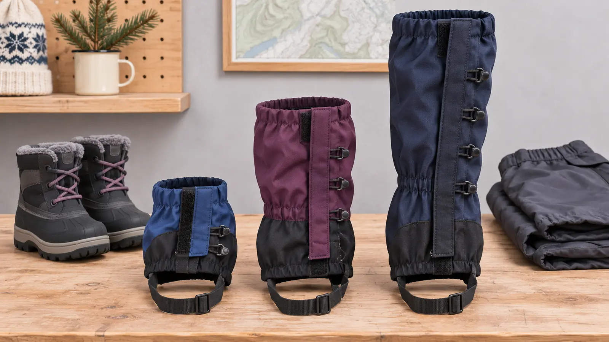

Low / ankle
Fits: trail grit, light mud or small splashes with compatible shoes. Tradeoff: little snow coverage and some designs require a matching heel attachment.
WINTER GEAR · BOOT INTERFACE · AUTHORITY-EXPANSION
A gaiter is a gasket, not magic waterproof pants. Match height to the snow, fit it over the actual boot and snow pant, inspect the underfoot strap, then make the child walk stairs before keeping it.

Commercial disclosure: this guide includes three Amazon Associate category links added by Mr Adventure Dad’s approved affiliate system. The site may earn from qualifying purchases at no added cost to you. No gaiter was hands-on tested, and the links do not prove fit, waterproofing, warmth, durability, price, stock, rating, warranty or safety.
Buy gaiters only when snow, slush or trail debris repeatedly enters over the boot top. Low gaiters handle grit and light trail splash. Mid-calf gaiters add coverage for shallow snow and wet brush. Taller gaiters make sense for deeper snow and snowshoe spray when the exact child size actually seals the boot and calf. Bigger is not automatically better: extra fabric can sag, rub, catch and make a child hotter.
Outdoor Research describes gaiters as a seal between boot and pant cuff. REI’s current use guide says height should match the protection needed and warns that fit depends on the manufacturer chart and the actual footwear. That is the whole buying framework: job, boot, child, closure, walk test.
Choose low gaiters for debris or light splash when the child’s shoe has the exact required attachment. Choose mid-calf for typical shallow-snow walks and a simpler balance of coverage and bulk. Choose taller gaiters only for deeper snow or snowshoe spray after confirming a real child size, closure range and boot interface.
Compare the current size chart, height, fabric claim, closure, lace hook, instep strap, care label, replacement parts, warranty, return terms and recall status. Avoid one-size adult gaiters cinched onto a child, exposed sharp hardware, unexplained cords, closures that land under a backpack hip belt, and products sold only with a “waterproof” word and no manual. The links below are category searches, not rankings.
A gaiter can help keep snow out while walking in snowshoes, but it does not correct a poor snowshoe binding or boot fit. Use the kids’ snowshoe fit guide separately. For sledding, loose straps or closures can snag; use only gear the activity and manufacturer permit. Remove bulky, wet or hardware-heavy gaiters before the child enters a vehicle if they interfere with safe walking, seating or restraint fit. The vehicle and child-restraint manuals control.
After each wet use, check the instep strap, lace hook, buckle, hook-and-loop field, stitching, elastic and fabric. Rinse salt or grit only as the care label permits and air-dry fully. REI’s care guidance identifies the instep strap as a high-wear area and advises against storing wet gaiters. Replace or repair only through the maker’s approved method; do not improvise wire, sharp clips or knots under the boot.
Growth is a replacement gate. A setting that worked last winter may compress the calf, miss the boot anchor or change walking this year. Refit from zero with the current boot. Pair the system with the snow-pants decision guide and winter-boot fit guide.
Gaiters do not make unsafe cold, wind, ice or deep snow acceptable. Use the family weather cutoff and turn around when the route exceeds the child’s clothing, skills or energy. Low energy: fit one gaiter indoors and compare it with the other leg—do not hike. Wet gear: dry first. No correct size: improve the snow-pant/boot overlap and skip the purchase.
Skip when snow is not entering the boot, the snow pants already seal well, the child cannot manage the hardware, the correct child size is unavailable, the gaiter changes walking, or a medical/orthotic interface needs professional guidance. No gaiter fixes a too-small boot, cotton socks, an unsafe trail or a child who is done.
Reviewed November 8, 2026 using Outdoor Research’s official gaiter use and height overview and model-family setup instructions, plus REI’s fit, height, setup and care guide. These sources explain categories and examples; the exact purchased model’s current manual controls. The height matrix and boot-seal test are independent editorial tools. No pictured gaiter is an affiliate product.
MAKE THE WEEK COUNT
Build the plan your family can finish well, then leave enough energy for the next part of the day.
More family plansTHE USEFUL STUFF
These are practical categories to compare—not a reason to overpack. Check fit, specifications and current reviews before buying.
Paid links: As an Amazon Associate I earn from qualifying purchases. You pay no additional cost.
Compare the exact footwear attachment, child-size chart, closure, lace hook or heel patch, care and return terms. Low coverage fits debris and light splash, not deep snow.
See current options → COMPARE ON AMAZONCheck the current boot size, dressed calf, closure overlap, lace hook, instep strap and clean indoor walk. A kids label does not prove a secure boot seal.
See current options → COMPARE ON AMAZONUse only when deeper snow justifies the extra coverage and a true child size fits. Verify the maker chart, strap route, hardware, care and return policy before outdoor use.
See current options →